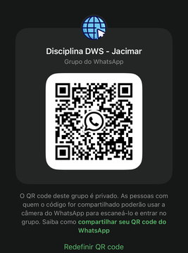
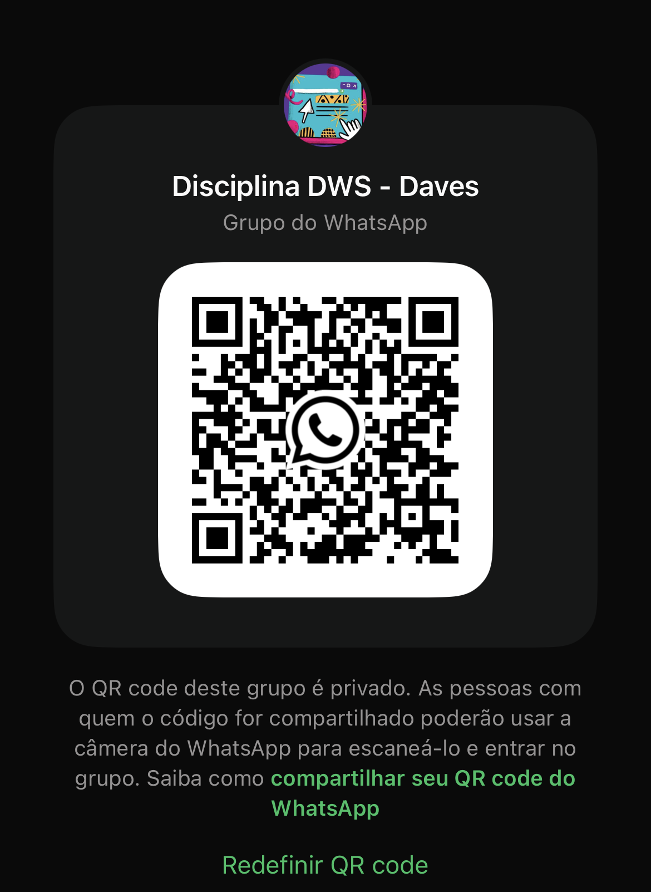

2026/2 - Desenvolvimento de Web Sites

Bem Vindos a Página Inicial da nossa disciplina de Desenvolvimento de Web Sites, que foi definida como sendo uma disciplina presencial.
Nós somos os professores Jacimar Tavares, Daves Martins e Victor Vidigal e seremos os professores de vocês neste semestre. Qualquer dúvida estaremos à disposição de vocês pelo nosso grupo de whatsapp grupo Jacimar 📱. grupo Daves 📱. grupo Victor 📱.
Observação importante: todas as nossas comunicações serão feitas via Canvas ou via nosso grupo de whatsapp. Mensagens no privado podem não ser respondidas com tempo hábil, devido à demanda alta.


Nesta página você poderá se direcionar para as seguintes opções:
Demais informações IMPORTANTES: